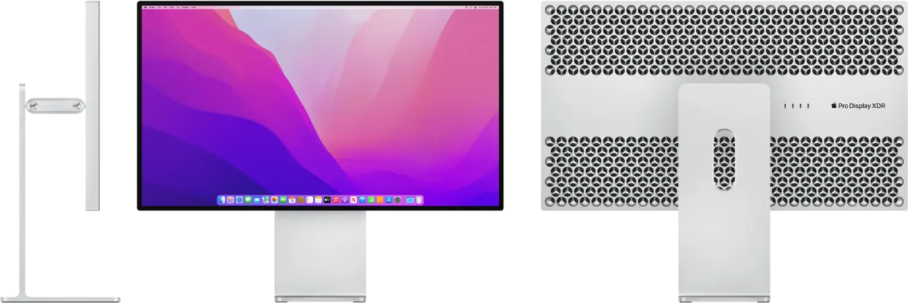

I like Thunderbolt a lot. Mostly because USB's land of optional features is a mess which makes choosing a cable/peripheral difficult. With thunderbolt you have a single number to get right. And then you are supposed to be golden. However the idyll with Intel's interface took a hit when I tried to make sense of Apple's Pro Display XDR requirements.
 Apple's Pro Display XDR (2019)If we take a look at the monitor's Technology Overview we find an impressive list of features. On top of its gorgeous design is listed 1600 nits brightness, 6K (6,016 x 3,384)[1] resolution, 60fps, P3 wide gamut, 32", one Thunderbolt-3 port, and three USB ports. USB-2 ports.
Wait, what? USB-2? From the year 2000? As in 480 Mbps? And what are the small prints at the bottom?
7. For the 16-inch MacBook Pro, USB-C ports have USB 3.1 Gen 1 data transfer speeds[2].
What is going on?
According to Intel's Thunderbolt-3 technology brief, the interface has a bandwidth of 40 Gbps[3][4]. With the 6,016 x 3,384 @ 60Hz / 10bpc[5] plugged into a calculator, the display requires roughly 38.2 Gbps.
This means Thunderbolt 3 bandwidth is nearly maxed out with only 40-38.2 = 1.8Gbps left. This cannot fit the 5 Gbps needed by USB 3.1 Gen 1 traffic. But Thunderbolt still has its LowSpeed lane where USB2 can be used (the remaining bandwidth on the four HighSpeed lane is unused). The math adds up[6].
But why is the 16-inch MacBook Pro able to get USB 3.1 Gen 1 (5 Gbps) speed? Because it is able to compress the display stream!
If you are a thunderbolt connoisseur, you will argue that there is no support for Display Stream Compression (DSC) in Thunderbolt 3. Intel's brief only mentions support up to DisplayPort 1.2a and there is no compression in that protocol.
But things get interesting when we look at the controllers. The brief of the first generation of Thunderbol3 controllers, Alpine Ridge Brief (series 6000), mentions no DSC. But the brief of the second generation of controllers, Titan Ridge (series 7000), does (via DisplayPort 1.4 support).
What is likely, is that there is something in the XDR which supports DisplayPort 1.4 (Titan Ridge?). And macs before the 16-inch MacBook Pro 2019 did not support it (Alpine Ridge?).
I am unsure it was a good idea to allow Thunderbolt 3 capabilities to differ based on the controller. On one side it allowed things like the XDR to exist. On the other, it fragmented Thunderbolt which used to be a selling point versus USB.
The result is that consumers have a hard time knowing if they will have USB 2 or USB 3.1 on their XDR. For a piece of hardware of that price that is rather annoying.
What future for 6K+ displays? Thunderbolt 4 was released in 2020 along with Intel's 8000-series controllers called Maple Ridge. It did not increase the bandwidth, which stayed at 40 Gbps, but it made support for DisplayPort 1.4 (and therefore DSC) mandatory.
This version allows supporting display configuration such as 8K@60Hz.
Thunderbolt 5 was announced in September 2023. We should start seeing Barlow Ridge (series-9000) controllers in 2024.
The combination of 120 Gbps "Bandwidth Boost", DisplayPort 2.1, and PCIe Gen4x4 will allows multiple 8K display, up to 540Hz refresh rates, and up to three 4K@144Hz if you want to replicate Al Gore's 2007 legendary setup (although he only got triple 2560 x 1600 @ 60Hz).
| Version | Release year | Speed (Gbps) | Speed (GBps) | DisplayPort | Documentation |
|---|---|---|---|---|---|
| 1 | 2010 | 10 | 1.5 | 1.1a | Tech brief |
| 2 | 2013 | 20 | 2.5 | 1.2 | Tech brief |
| 3 | 2015 | 40 | 5 | (Alpine Ridge) 1.2 (Titan Ridge) 1.4 |
Tech brief |
| 4 | 2022 | 40 | 5 | 1.4 | Tech brief |
| 5 | 2023 | 120 | 15 | 2.1 | Tech brief |
| ^ | [1] | XDR uses 6016 x 3384 but others can be 6144 x 3456! Explanation by 'huy-nguyen' |
| ^ | [2] | The list of Compatible Mac models has since increased |
| ^ | [3] | TB3 line rate is 40.25. 64b/66b encoding leaves 40gbps usable. |
| ^ | [4] | Thanks to user fleventynine and Karoly 'chx' Negyesifor taking the time to explain it to me |
| ^ | [5] | 10 bpc is needed to achieve HDR. Regular RGB uses 8 bpc. |
| ^ | [6] | Thanks to Karoly 'chx Negyesi for the precision. |
{kind=link}